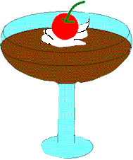
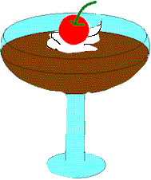

ゼリーづくり
作り方
- 分量のゼラチンパウダーを分量の水で5分程ふやかしてておく。
- コーヒー液を作る。砂糖を加え、液の温度を７０℃ー８０℃にして
１のゼラチンを加えよくまぜる。 - あら熱を取り、作りたい個数分のグラスにゼリー液を注ぐ。
- 冷蔵庫で１時間程冷やす。
- ゼリーが固まったら、お好みでホイップクリームやフルーツを飾る。
- コーヒー液の代わりにオレンジジュースやりんごジュースに砂糖を加えて 暖めて同様に作るとフルーツゼリーができる。
材料
右上のアプレットの白い箱をクリックしてから、あなたの作りたいゼリーの
個数を数字（半角）で入力して下さい。すぐに
材料の分量が自動計算されて表示されます。
LA CHAMBRE DE JUNKO ホームページへ戻る
 
